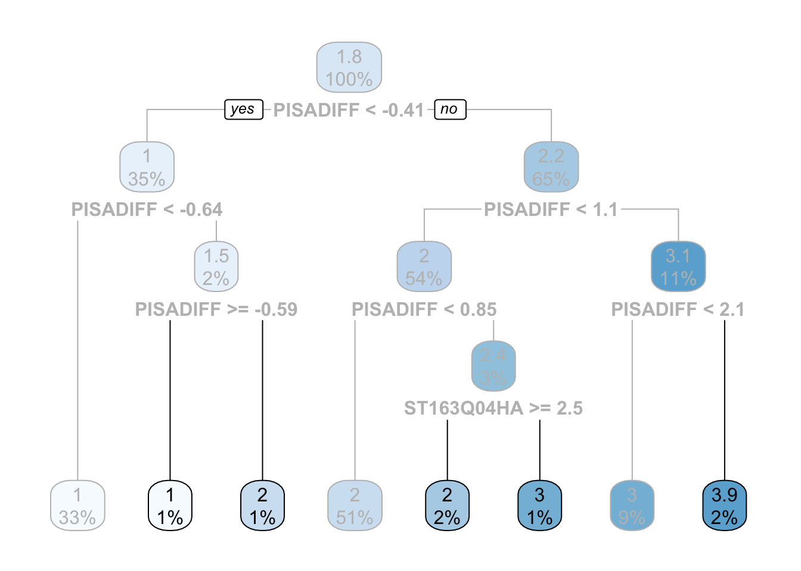
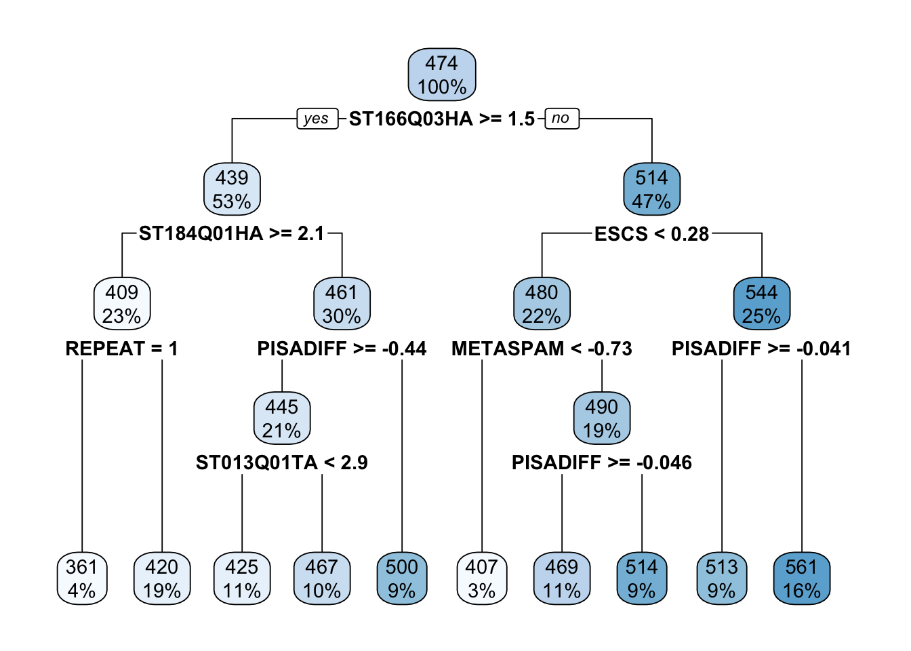
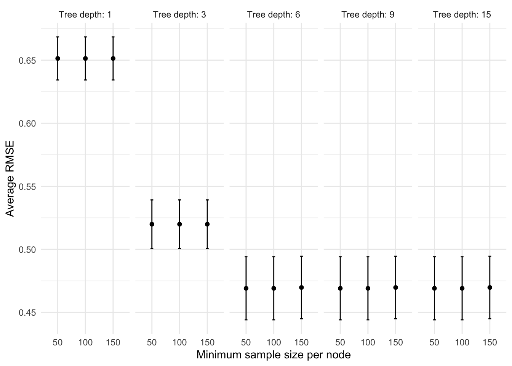

Chapter 3 Tree-based methods
In this chapter we will touch upon the most popular tree-based methods used in machine learning. Haven’t heard of the term “tree-based methods”? Do not panic. The idea behind tree-based methods is very simple and we’ll explain how they work step by step through the basics. Most of the material on this chapter was built upon Boehmke and Greenwell (2019) and James et al. (2013).
Before we begin, let’s load tidyflow and tidymodels and read the data that we’ll be using.
library(tidymodels)
library(tidyflow)
library(rpart.plot)
data_link <- "https://raw.githubusercontent.com/cimentadaj/ml_socsci/master/data/pisa_us_2018.csv"
pisa <- read.csv(data_link)3.1 Decision trees
Decision trees are simple models. In fact, they are even simpler than linear models. They require little statistical background and are in fact among the simplest models to communicate to a general audience. In particular, the visualizations used for decision trees are very powerful in conveying information and can even serve as an exploratory avenue for social research.
Throughout this chapter, we’ll be using the PISA data set from the regularization chapter. On this example we’ll be focusing on predicting the math_score of students in the United States, based on the socio economic status of the parents (named HISEI in the data; the higher the HISEI variable, the higher the socio economic status), the father’s education (named FISCED in the data; coded as several categories from 0 to 6 where 6 is high education) and whether the child repeated a grade (named REPEAT in the data). On the other hand, REPEAT is a dummy variable where 1 means the child repeated a grade and 0 no repetition.
Decision trees, as their name conveys, are tree-like diagrams. The work by defining yes-or-no rules based on the data to try to predict the most common value in each final branch. The best way to learn about decision trees is by looking at one. Let’s do that:

In this example the top-most box which says HISEI < 56 is the root node. This is the most important variable that predicts math_score. Inside the blue box you can see two numbers: \(100\%\) which means that the entire sample is present in this node and the number 474, the average test score for mathematics for the entire sample:

On both sides of the root node (HISEI < 56) there is a yes and a no. Decision trees work by partitioning variables into yes-or-no branches. The yes branch satisfies the name of root (HISEI < 56) and always branches out to the left:

In contrast, the no branch always branches out to the right:

The criteria for separating into yes-or-no branches is that respondents must be very similar within branches and very different between branches (later in this chapter I will explain in detail which criteria is used and how). The decision tree figures out that respondents that have an HISEI below \(56\) and above \(56\) are the most different with respect to the mathematics score. The left branch (where there is a yes in the root node) are those which have a HISEI below 56 and the right branch (where there is a no) are those which have a HISEI above \(56\). Let’s call these two groups the low and high SES respectively. If we look at the two boxes that come down from these branches, the low SES branch has an average math score of \(446\) while the high SES branch has an average test score of \(501\):

For the sake of simplicity, let’s focus now on the branch of the low SES group (the left branch). The second node coming out of the low SES branch contains 50% of the sample and an average math score of \(446\). This is the node with the rule REPEAT >= 0.5:

This ‘intermediate’ node is called internal node. For calculating this internal node, the decision tree algorithm limits the entire data set to only those which have low SES (literally, the decision tree does something like pisa[pisa$HISEI < 56, ]) and asks the same question that it did in the root node: of all the variables in the model which one separates two branches such that respondents are very similar within the branch but very different between the branches with respect to math_score?
For those with low SES background, this variable is whether the child repeated a grade or not. In particular, those coming from low SES background which repeated a grade, had an average math score of \(387\) whereas those who didn’t have an average math score of \(456\):

These two nodes at the bottom are called leaf nodes because they are like the ‘leafs of the tree’. Leaf nodes are of particular importance because they are the ones that dictate what the final value of math_score will be. Any new data that is predicted with this model will always give an average math_score of \(456\) for those of low SES background who didn’t repeat a grade:

Similarly, any respondent from high SES background, with a highly educated father who didn’t repeat a grade, will get assigned a math_score of \(527\):

That is it. That is a decision tree in it’s simplest form. It contains a root node and several internal and leaf nodes and it can be interpreted just as we just did. The right branch of the tree can be summarized with the same interpretation. For example, for high SES respondents, father’s education (FISCED) is more important than REPEAT to separate between math scores:

This is the case because it comes first in the tree. Substantially, this might be due to the fact that there is higher variation in education credentials for parents of high SES background than for those of low SES background. We can see that those with the highest father’s education (FISCED above \(5.5\)), the average math score is \(524\) whereas those with father’s education below \(5.5\) have a math score of \(478\):

Did you notice that we haven’t interpreted any coefficients? That’s right. Decision trees have no coefficients and many other machine learning algorithms also don’t produce coefficients. Although for the case of decision trees this is because the model produces information in another way (through visualization of trees), lack of coefficients is common in machine learning models because they are too complex to generate coefficients for single predictors. These models are non-linear, non-parametric in nature, produce extremely complex relationships that we difficult to summarize in coefficients. Instead, the only produce predictions. We’ll be delving into this topic in future sections in detail.
I hope that these examples show that decision trees are a great tool for exploratory analysis and I strongly believe they have an inmense potential for exploring interactions in social science research. In case you didn’t notice it, we literally just interpreted an interaction term that social scientists would routinely use in linear models. Without having to worry about statistical significance or plotting marginal effects, social scientists can use decision trees as an exploratory medium to understand interactions in an intuitive way.
You might be asking yourself, how do we fit these models and visualize them? tidyflow and tidymodels have got you covered. For example, for fitting the model from above, we can begin our tidyflow, add a split, a formula and define the decision tree:
# Define the decision tree and tell it the the dependent
# variable is continuous ('mode' = 'regression')
mod1 <- set_engine(decision_tree(mode = "regression"), "rpart")
tflow <-
# Plug the data
pisa %>%
# Begin the tidyflow
tidyflow(seed = 23151) %>%
# Separate the data into training/testing
plug_split(initial_split) %>%
# Plug the formula
plug_formula(math_score ~ FISCED + HISEI + REPEAT) %>%
# Plug the model
plug_model(mod1)
vanilla_fit <- fit(tflow)
tree <- pull_tflow_fit(vanilla_fit)$fit
rpart.plot(tree)If you read the chapter on reguralization, the only thing new here should be rpart.plot. All plug_* functions serve to build your machine learning workflow and the model decision_tree is the equivalent of linear_reg that we saw in the previous chapter. We are just recycling the same code for this model. rpart.plot on the other hand, is a function used specifically for plotting the decision tree (that is why we loaded the package rpart.plot at the beginning). No need to delve much into this function. It just works if you pass it a decision tree model: that is why pull the model fit before calling it.
Now I’ve told all the good things about decision trees but they are not a smoking gun. They have serious limitations. In particular, there are two that we’ll discuss in this chapter. The first one is that decision trees tend to overfit a lot. Just for the sake of showing this problem, let’s switch the example. Let’s say we’re trying to understand which variables are related to whether teachers set goals in the classroom. Substantially, this example might not make a lot of sense, but but let’s follow along just to show how much trees can overfit the data. This variable is named ST102Q01TA. Let’s plug it into our tidyflow and visualize the tree:
## ST100Q01TA
## ST102Q01TA
## IC009Q07NA
## ST011Q03TA
## ST011Q05TA
## ST011Q10TA
tflow <-
tflow %>%
replace_formula(ST102Q01TA ~ .)
fit_complex <- fit(tflow)
tree <- pull_tflow_fit(fit_complex)$fit
rpart.plot(tree)
The tree is quite big compared to our previous examples and makes the interpretation more difficult. However, equally important, some leaf nodes are very small. Decision trees can capture a lot of noise and mimic the data very closely. \(6\) leaf nodes have less than \(3\%\) of the sample. These are leaf nodes with very weak statistical power:

What would happen if a tiny %1% of those leaf nodes respondend slightly different? It is possible we get a complete different tree. Decision trees are not well known for being robust. In fact, it is one of its main weaknesses. However, decision trees have an argument called min_n that force the tree to discard any node that has a number of observations below your minimum. Let’s run the model above and set the minimum number of observation per node to be \(200\):
dectree <- update(mod1, min_n = 200)
tflow <-
tflow %>%
replace_model(dectree)
fit_complex <- fit(tflow)
tree <- pull_tflow_fit(fit_complex)$fit
rpart.plot(tree)
The tree was reduced considerably now. There are fewer leaf nodes and all nodes have a greater sample size than before.
You might be wondering: what should the minimum sample size be? There is no easy answer for this. The rule of thumb should be relative to your data and research question. In particular, the identification of small nodes should be analyzed with care. Perhaps there is a group of outliers that consitute a node and it’s not a problem of statistical noise. By increasing the minimum sample size for each node you would be destroying that statistical finding.
For example, suppose we are studying welfare social expenditure as the dependent variable and then we had other independent variables, among which are country names. Scandinavian countries might group pretty well into a solitary node because they are super powers in welfare spending (these are Denmark, Norway, Sweden and Finland). If we increased the minimum sample size to \(10\), we might group them with Germany and France, which are completely different in substantive terms. The best rule of thumb I can recommend is no other than to study your problem at hand with great care and make decisions accordingly. It might make sense to increase the sample or it might not depending on the research question, the sample size, whether you’re exploring the data or whether you’re interested in predicting on new data.
The second problem with decision trees is the tree depth. As can be seen from the previous plot, decision trees can create leaf nodes which are very small. In other more complicated scenarios, your tree might get huge. Yes, huge:

More often that not, these huge trees are just overfitting the data. They are creating very small nodes that capture noise from the data and when you’re predicting on new data, they perform terribly bad. As well as the min_n argument, decision trees have another argument called tree_depth. This argument forces the tree to stop growing if it passes the maximum depth of the tree as measured in nodes. Let’s run our previous example with only a depth of three nodes:
dectree <- update(mod1, min_n = 200, tree_depth = 3)
tflow <-
tflow %>%
replace_model(dectree)
fit_complex <- fit(tflow)
tree <- pull_tflow_fit(fit_complex)$fit
rpart.plot(tree)
The tree was reduced considerably now in combination with the minimun number of respondents within each node. Note that we’ve been interpreting decision trees in a ‘subjective’ fashion. That is, we’ve been cutting the nodes of the trees from subjective criteria that makes sense to our research problem. This is how we social scientists would analyze the data. The tree should model our theoretical problem and make substantive sense. However, for machine learning, we have other criteria: how well it predicts. Let’s check how our model predicts at this point:
## # A tibble: 1 x 3
## .metric .estimator .estimate
## <chr> <chr> <dbl>
## 1 rmse standard 0.514Our predictions for each set goals is off by around \(.5\) in a scale of \(1\) through \(4\). This is not terribly bad. For example, it means that for every child that answered a \(2\), on average, we have an error of around \(.5\). This means that any prediction for a single number runs the risk of being wrongly predicting either the number from above or below (a child which has a \(2\) might get wrongly predicte a \(3\) or a \(1\) but hardly a \(4\)). To improve prediction, we can allow tidyflow to search for the best combination of min_n and tree_depth that maximizes prediction. Let’s perform a grid search for these two tuning values. However, let’s set the tuning values ourselves:
tune_mod <- update(dectree, min_n = tune(), tree_depth = tune())
tflow <-
tflow %>%
plug_resample(vfold_cv) %>%
plug_grid(
expand.grid,
tree_depth = c(1, 3, 6, 9, 15),
min_n = c(50, 100, 150)
) %>%
replace_model(tune_mod)
fit_tuned <- fit(tflow)
fit_tuned %>%
pull_tflow_fit_tuning() %>%
show_best(metric = "rmse")## # A tibble: 5 x 7
## tree_depth min_n .metric .estimator mean n std_err
## <dbl> <dbl> <chr> <chr> <dbl> <int> <dbl>
## 1 6 50 rmse standard 0.469 10 0.0128
## 2 6 100 rmse standard 0.469 10 0.0128
## 3 9 50 rmse standard 0.469 10 0.0128
## 4 9 100 rmse standard 0.469 10 0.0128
## 5 15 50 rmse standard 0.469 10 0.0128It seems that our predictions on the training data were slightly overfitting the data, as the best error from the cross-validation search is centered around 0.469 with a standard error of 0.01. Let’s explore whether the error changes between the minimum sample size and the tree depth:
tree_depth_lvl <- paste0("Tree depth: ", c(1, 3, 6, 9, 15))
fit_tuned %>%
pull_tflow_fit_tuning() %>%
collect_metrics() %>%
mutate(ci_low = mean - (1.96 * std_err),
ci_high = mean + (1.96 * std_err),
tree_depth = factor(paste0("Tree depth: ", tree_depth), levels = tree_depth_lvl),
min_n = factor(min_n, levels = c("50", "100", "150"))) %>%
filter(.metric == "rmse") %>%
ggplot(aes(min_n, mean)) +
geom_point() +
geom_errorbar(aes(ymin = ci_low, ymax = ci_high), width = .1) +
scale_x_discrete("Minimum sample size per node") +
scale_y_continuous("Average RMSE") +
facet_wrap(~ tree_depth, nrow = 1) +
theme_minimal()
On the x axis we have the minimum sample size per node (these are the values for min_n) and on the y axis we have the error of the model through cross-validation (the \(RMSE\)). The lower each points is on the plot, the better, since it means that the error is lower.
Let’s begin with the first plot on the left. The points represent the error of the model with different sample sizes for the nodes with a fixed tree depth of \(1\). For a tree depth of \(1\), the error of the model is of around .65. However, as the number of trees increases (the additional plots to the right), the error comes down to nearly .47 when there is a tree_depth of 6. It seems that the simplest model with the lowest \(RMSE\) has a tree_depth of \(6\) and a minimum sample size of 50. We calculated this ourselves for the sake of the example, but complete_tflow can calculate this for you:
final_model <-
fit_tuned %>%
complete_tflow(metric = "rmse", tree_depth, "select_by_one_std_err")
train_err <-
final_model %>%
predict_training() %>%
rmse(ST102Q01TA, .pred)
test_err <-
final_model %>%
predict_testing() %>%
rmse(ST102Q01TA, .pred)
c("testing error" = test_err$.estimate, "training error" = train_err$.estimate)## testing error training error
## 0.4644939 0.4512248Our testing error and our training error have a difference of only \(0.01\), not bad. The cross-validation tuning seemed to have helped avoid a great deal of overfitting.
Before we go through the next section, I want to briefly mention an alternative to tree_depth and min_n. A technique called ‘tree pruning’ is also very common for modeling decision trees. It first grows a very large and complex tree and then starts pruning the leafs. This technique is also very useful but due to the lack of time, we won’t cover this. You can check out the material on this technique from the resources outlined in the first paragraph of this section.
3.1.1 Advanced: how do trees choose where to split?
Throughout most of the chapter we’ve seen that trees find optimal ‘splits’ that make the respondents very different between the splits and very similar within them. But how do decision trees make these splits? Let’s work out a simple example using the HISEI variable from the first model in this section.
HISEI is an index for the socio-economic status of families. It’s continuous and has a distribution like this:

As we saw in the first tree of this section, HISEI is the root node. To decide on the root node, the decision tree algorithm chooses a random location in the distribution of HISEI and draws a split:

The two sides have an average math_score which serves as the baseline for how different these two groups are. At this point, the algorithm does something very simple: for each split, it calculates the Residual Sum of Squares (RSS). This is just the sum of the math_score of each respondent (\(math_i\)) minus the average math_score (\(\hat{math}\)) for that split squared. In other words, it applies the \(RSS\) for each split:
\[\begin{equation} RSS = \sum_{k = 1}^n(math_i - \hat{math})^2 \end{equation}\]
Each side of the split then has a corresponding \(RSS\):

After that, it calculates the total \(RSS\) of the split by adding the two \(RSS\):

So far we should have a single random split with an associated \(RSS\) for \(HISEI\). The decision tree algorithm is called recursive binary splitting because it is recursive: it repeats itself again many times. It repeats the strategy of \(Split\) -> \(RSS_{split}\) -> \(RSS_{total}\) many times such that we get a distribution of splits and \(RSS\) for \(HISEI\):

This produces a distribution of random splits with an associated metric of fit (\(RSS\)) for \(HISEI\). Recursive binary splitting applies this same logic to every single variable in the model such that you have a distribution of splits for every single variable:
## # A tibble: 8 x 3
## variable random_split total_rss
## <chr> <chr> <chr>
## 1 "HISEI" 41.22 "Total RSS: 34423362"
## 2 "HISEI" 53.77 "Total RSS: 34400218"
## 3 "HISEI" 56.57 "Total RSS: 32523560"
## 4 "" ... ""
## 5 "FISCED" 2 "Total RSS: 35901660"
## 6 "FISCED" 1 "Total RSS: 36085201"
## 7 "FISCED" 5 "Total RSS: 34083264"
## 8 "" ... ""With such a distribution, the algorithm can objectively ask: which random split best separates the data into two branches with the lowest \(RSS\)? And based on that answer, the first node is chosen. After this first node is chosen, two branches grow to both sides. The algorithm then applies exactly the same set of rules recursively for each branch until a maximum depth is reached.
Although this explanation will be in nearly all cases invisible to you, this behind the scenes explanation can help you understand better which criteria is used for choosing a split. For example, understanding how this splitting is done gives you insight into how outliers do not affect the selection of splits because the splitting criteria is random and navigates the entire distribution.
In addition, there might be cases where you might want to switch the \(RSS\) for another loss function because it makes sense for your problem. For example, using decision trees with binary dependent variables merits another type of loss function: Gini impurity. We won’t delve into this but it serves as an example that these are things which are not hard fixed. It might make sense to experiment with them if needed.
3.2 Exercises
References
Boehmke, Brad, and Brandon M Greenwell. 2019. Hands-on Machine Learning with R. CRC Press.
James, Gareth, Daniela Witten, Trevor Hastie, and Robert Tibshirani. 2013. An Introduction to Statistical Learning. Vol. 112. Springer.